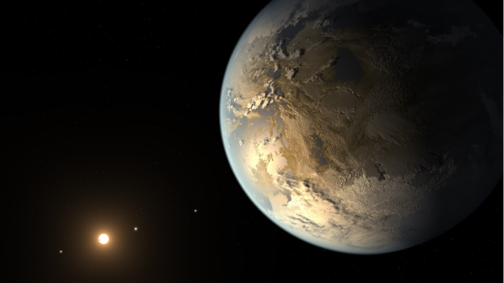
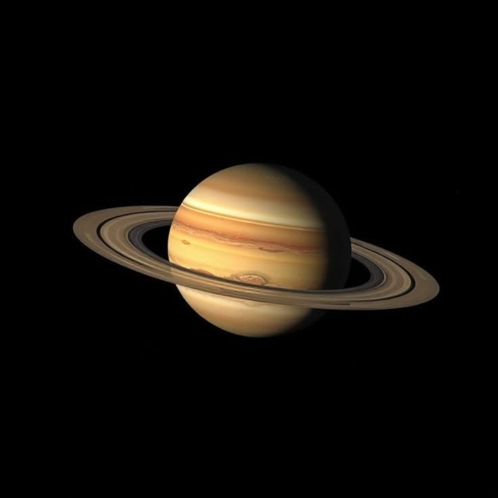
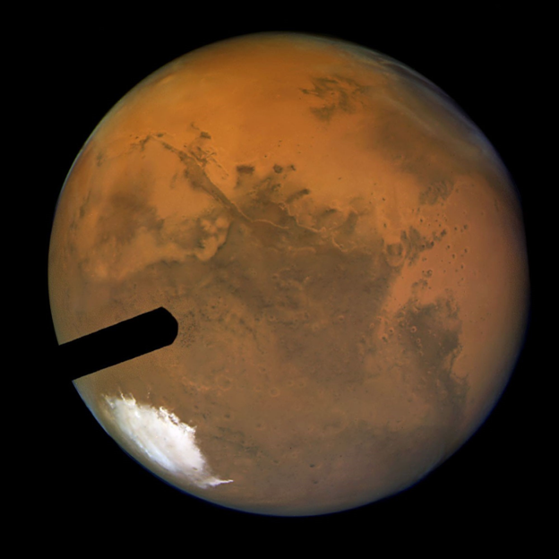

Our Solar System is just a tiny fraction of what exists in the vastness of space. Beyond our horizon lie wild, unexplored worlds. Discover gas giants with massive ring systems, freezing icy worlds, and newly discovered exoplanets in distant star systems that sit in the "Goldilocks zone"—regions where liquid water, and potentially life, could exist just like on Earth.

